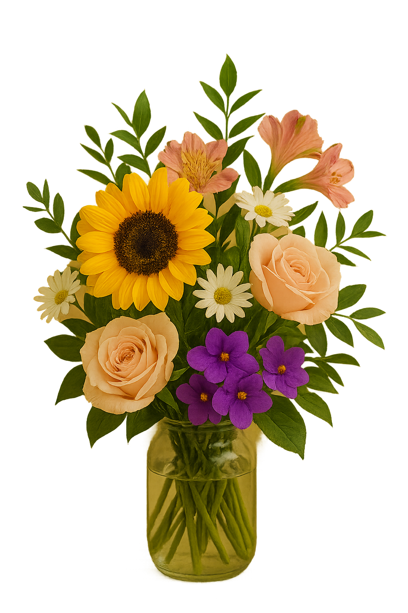

💐 Quer fazer uma surpresa a alguém?
Presentear com flores é um gesto de carinho e beleza. Mas se a casa da pessoa presenteada tem um gato, a escolha do arranjo exige atenção especial. Muitos dos buquês tradicionais podem ser tóxicos para felinos e causar reações graves — mesmo se apenas mastigarem uma folha ou pétala.
Lírios, tulipas e cravos são lindos, mas altamente perigosos. A ingestão de pequenas quantidades pode afetar rins, fígado ou sistema nervoso dos gatos.
Mas nem tudo está perdido! Algumas flores são seguras e encantam com igual intensidade. Aposte em:
- 🌸 Orquídeas (Phalaenopsis)
- 🌻 Girassóis
- 🌺 Violetas-africanas
- 🌼 Astromélias (de floricultura controlada)
Combine-as com folhagens não tóxicas e envolva o arranjo em papéis recicláveis. Além de mais seguros, esses buquês mostram cuidado, informação e empatia com quem tem um pet em casa.
🌿 A melhor surpresa é aquela que alegra sem ameaçar. Com escolha consciente, flores e gatos convivem muito bem.
← Voltar para o blog